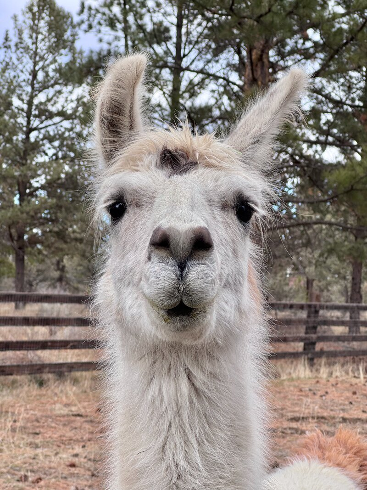

Camelid Fun Under the Trees: NWCF's 2024 Fundraiser
Llama and alpaca enthusiasts gathered in central Oregon in August, hosted by Crescent Moon Ranch. Every dollar raised went directly to camelid research.
Read the full recapWe fund veterinary research and scholarships at Oregon State University and Washington State University, and connect llama and alpaca owners across the Pacific Northwest.

For over 35 years, the Northwest Camelid Foundation has funded the veterinary research that keeps llamas and alpacas healthy. We support groundbreaking work at OSU and WSU, train the next generation of camelid veterinarians through scholarships, and bring owners together through education events across the Pacific Northwest.
We award grants to qualified veterinary researchers at OSU and WSU, funding studies that directly improve camelid health outcomes.
Explore our research →Each year we award scholarships to veterinary students with a passion for camelid medicine, helping build the next generation of specialists.
Meet our scholars →Through Meet & Greet events and conferences across the Pacific Northwest, we connect llama and alpaca owners with leading camelid veterinarians.
See upcoming events →In 1989, scientists discovered that llamas and alpacas produce a unique type of antibody — one missing the light chains found in almost every other species. These "nanobodies" are smaller, more stable, and can reach places in the body that conventional antibodies cannot.
At OSU's Carlson College of Veterinary Medicine, Dr. Chris Cebra and his colleagues are using camelid nanobodies to target tuberculosis bacteria, the Dengue Fever virus, and cancer proteins in dogs — work that has implications far beyond the barn.
Read more about our research"It looks like it will also be useful on sick camelids, not just the healthy ones."
— Dr. Erica McKenzie, Diplomate ACVIM, Assistant Professor of Large Animal Medicine, Oregon State UniversityLlama and alpaca enthusiasts gathered in central Oregon in August, hosted by Crescent Moon Ranch. Every dollar raised went directly to camelid research.
Read the full recapDean Tornquist reflects on the long-standing partnership between NWCF and the Carlson College of Veterinary Medicine at Oregon State University.
Read the full messageNWCF hosts Camelid Owners Meet & Greet events at venues across the Pacific Northwest — from Centralia, WA to Bend, OR. These are informal, educational gatherings where owners connect with one another and hear directly from leading camelid veterinarians.
We also co-sponsor the biennial camelid medicine conference at OSU's Carlson College of Veterinary Medicine every March.
We announce new Meet & Greet dates by email. Sign up and we'll let you know when an event is coming to your area.
100% of funds raised at our annual fundraiser events go directly to camelid veterinary research. Your donation helps fund the studies that keep llamas and alpacas healthy for generations to come.